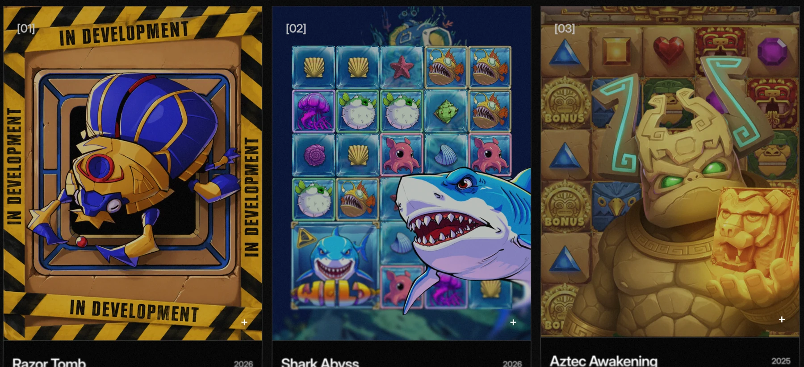

OUTCOME
+60%
player sessions
01 GAME STUDIO · PRODUCT
Rebuilding engagement across a game portfolio.
Low retention and weak engagement meant the answer could not simply be “ship more games.” The experience itself needed to become more interactive and visually compelling.
- Problem
- Low retention and not enough player engagement.
- What I did
- Worked on product direction and the game portfolio, used player/client feedback to guide decisions, helped reshape the art direction, and pushed for more interactive game and feature experiences.
- Outcome
- More than 60% increase in player sessions.
- Learning
- Clients and users need to remain at the centre of product decisions.